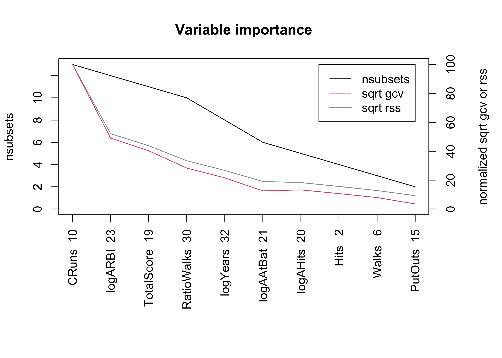
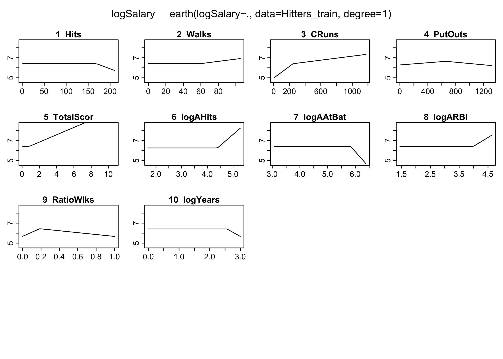
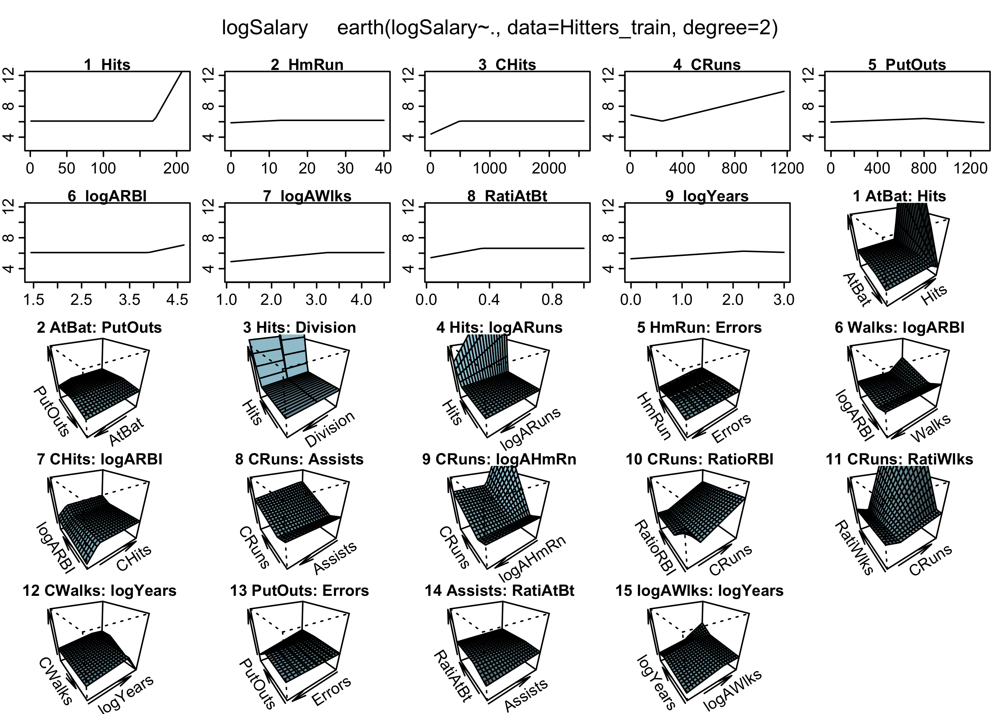

Rows: 263
Columns: 20
$ AtBat <int> 315, 479, 496, 321, 594, 185, 298, 323, 401, 574, 202, 418, …
$ Hits <int> 81, 130, 141, 87, 169, 37, 73, 81, 92, 159, 53, 113, 60, 43,…
$ HmRun <int> 7, 18, 20, 10, 4, 1, 0, 6, 17, 21, 4, 13, 0, 7, 20, 2, 8, 16…
$ Runs <int> 24, 66, 65, 39, 74, 23, 24, 26, 49, 107, 31, 48, 30, 29, 89,…
$ RBI <int> 38, 72, 78, 42, 51, 8, 24, 32, 66, 75, 26, 61, 11, 27, 75, 8…
$ Walks <int> 39, 76, 37, 30, 35, 21, 7, 8, 65, 59, 27, 47, 22, 30, 73, 15…
$ Years <int> 14, 3, 11, 2, 11, 2, 3, 2, 13, 10, 9, 4, 6, 13, 15, 5, 8, 1,…
$ CAtBat <int> 3449, 1624, 5628, 396, 4408, 214, 509, 341, 5206, 4631, 1876…
$ CHits <int> 835, 457, 1575, 101, 1133, 42, 108, 86, 1332, 1300, 467, 392…
$ CHmRun <int> 69, 63, 225, 12, 19, 1, 0, 6, 253, 90, 15, 41, 4, 36, 177, 5…
$ CRuns <int> 321, 224, 828, 48, 501, 30, 41, 32, 784, 702, 192, 205, 309,…
$ CRBI <int> 414, 266, 838, 46, 336, 9, 37, 34, 890, 504, 186, 204, 103, …
$ CWalks <int> 375, 263, 354, 33, 194, 24, 12, 8, 866, 488, 161, 203, 207, …
$ League <fct> N, A, N, N, A, N, A, N, A, A, N, N, A, N, N, A, N, N, A, N, …
$ Division <fct> W, W, E, E, W, E, W, W, E, E, W, E, E, E, W, W, W, E, W, W, …
$ PutOuts <int> 632, 880, 200, 805, 282, 76, 121, 143, 0, 238, 304, 211, 121…
$ Assists <int> 43, 82, 11, 40, 421, 127, 283, 290, 0, 445, 45, 11, 151, 45,…
$ Errors <int> 10, 14, 3, 4, 25, 7, 9, 19, 0, 22, 11, 7, 6, 8, 10, 16, 2, 5…
$ Salary <dbl> 475.000, 480.000, 500.000, 91.500, 750.000, 70.000, 100.000,…
$ NewLeague <fct> N, A, N, N, A, A, A, N, A, A, N, N, A, N, N, A, N, N, N, N, …Additive models
Data Mining - CdL CLAMSES
Homepage

“I never keep a scorecard or the batting averages. I hate statistics. What I got to know, I keep in my head.”
Dizzy Dean, baseball player in the ’30s and ’40s.
In this unit we will cover the following topics:
- Generalized additive models (GAMs)
- Multivariate Adaptive Regression Splines (MARS)
The running example is about baseball data… but a lot has changed since the ’30s!
The Hitters dataset
We consider the
Hittersdataset, which contains information about n = 263 Major League Baseball players from the 1986 and 1987 seasons.We want to predict the Salary of 1987 of each player, as a function of several covariates:
- number of hits/runs/walks/assists/errors in 1986 and during the whole career;
- number of years in the major leagues;
- The league/division of the player at the end of 1986;
- …and many others.
We considered the logarithmic transform of the salary (
logSalary) and the logarithmic transform of the number of years in major leagues (logYears).Including the intercept, there are in total p = 20 variables that can be used to predict the salary of each player.
The original dataset is available in the
ISLRR package.
A glimpse of the Hitters dataset
Preliminary operations
Generalized additive models (GAM)
MARS
Loading required package: FormulaLoading required package: plotmoLoading required package: plotrixLoading required package: TeachingDemosCall: earth(formula=logSalary~., data=Hitters_train, degree=1)
logSalary =
6.51823
- 0.01629737 * pmax(0, Hits - 169)
+ 0.01118536 * pmax(0, Walks - 59)
- 0.005811466 * pmax(0, 247 - CRuns)
+ 0.001003021 * pmax(0, CRuns - 247)
- 0.0005516759 * pmax(0, 659 - PutOuts)
- 0.000651503 * pmax(0, PutOuts - 659)
+ 0.3668041 * pmax(0, TotalScore - 0.8388626)
+ 2.219163 * pmax(0, logAHits - 4.394449)
- 3.111009 * pmax(0, logAAtBat - 5.829534)
+ 1.762515 * pmax(0, logARBI - 3.997661)
- 4.067173 * pmax(0, 0.1864407 - RatioWalks)
- 0.9447003 * pmax(0, RatioWalks - 0.1864407)
- 1.722476 * pmax(0, logYears - 2.564949)
Selected 14 of 21 terms, and 10 of 32 predictors
Termination condition: RSq changed by less than 0.001 at 21 terms
Importance: CRuns, logARBI, TotalScore, RatioWalks, logYears, logAAtBat, ...
Number of terms at each degree of interaction: 1 13 (additive model)
GCV 0.1545222 RSS 22.66848 GRSq 0.8160497 RSq 0.8616159
plotmo grid: AtBat Hits HmRun Runs RBI Walks CAtBat CHits CHmRun CRuns CRBI
407 103 9 50 46 39 1924 491 40 247 208
CWalks League Division PutOuts Assists Errors NewLeague TotalScore logAHits
175 A W 224 45 7 A 0.3806452 4.465908
logAAtBat logARuns logARBI logAWalks logAHmRun RatioHits RatioAtBat RatioRuns
5.808893 3.788725 3.628776 3.390024 2.010449 0.2013699 0.205298 0.2098765
RatioRBI RatioWalks RatioHmRun logYears
0.2202899 0.2153285 0.2204724 1.791759
Call: earth(formula=logSalary~., data=Hitters_train, degree=2)
logSalary =
7.253179
+ 0.8667883 * pmax(0, Hits - 169)
- 0.02455974 * pmax(0, 13 - HmRun)
- 0.003480738 * pmax(0, 491 - CHits)
+ 0.001597206 * pmax(0, CRuns - 247)
- 0.0005803885 * pmax(0, 808 - PutOuts)
+ 1.329527 * pmax(0, logARBI - 3.89182)
- 0.5518048 * pmax(0, 3.232121 - logAWalks)
- 3.956706 * pmax(0, 0.3530534 - RatioAtBat)
- 0.448058 * pmax(0, 2.197225 - logYears)
- 0.9122358 * pmax(0, logYears - 2.197225)
- 0.0007651018 * AtBat * pmax(0, Hits - 169)
- 0.04449506 * pmax(0, Hits - 169) * DivisionW
- 0.09067808 * pmax(0, Hits - 169) * logARuns
- 0.0001489024 * pmax(0, PutOuts - 808) * Errors
- 5.574428e-06 * pmax(0, AtBat - 491) * pmax(0, 808 - PutOuts)
- 0.001954916 * pmax(0, HmRun - 13) * pmax(0, Errors - 7)
+ 0.02858767 * pmax(0, 34 - Walks) * pmax(0, 3.89182 - logARBI)
- 0.0008211653 * pmax(0, 491 - CHits) * pmax(0, 3.427515 - logARBI)
- 3.909666e-06 * pmax(0, CRuns - 247) * pmax(0, Assists - 43)
+ 0.006866712 * pmax(0, CRuns - 247) * pmax(0, 1.321756 - logAHmRun)
+ 0.04258266 * pmax(0, 247 - CRuns) * pmax(0, 0.2972973 - RatioRBI)
+ 0.02165705 * pmax(0, CRuns - 247) * pmax(0, RatioWalks - 0.09734513)
- 0.004333381 * pmax(0, CWalks - 373) * pmax(0, logYears - 2.197225)
+ 0.005619607 * pmax(0, Assists - 6) * pmax(0, 0.3530534 - RatioAtBat)
+ 2.079171 * pmax(0, logAWalks - 3.044522) * pmax(0, logYears - 2.197225)
Selected 26 of 47 terms, and 19 of 32 predictors
Termination condition: RSq changed by less than 0.001 at 47 terms
Importance: logARBI, CHits, CRuns, RatioRBI, RatioWalks, Hits, DivisionW, ...
Number of terms at each degree of interaction: 1 10 15
GCV 0.1334604 RSS 12.07393 GRSq 0.8411226 RSq 0.9262924
plotmo grid: AtBat Hits HmRun Runs RBI Walks CAtBat CHits CHmRun CRuns CRBI
407 103 9 50 46 39 1924 491 40 247 208
CWalks League Division PutOuts Assists Errors NewLeague TotalScore logAHits
175 A W 224 45 7 A 0.3806452 4.465908
logAAtBat logARuns logARBI logAWalks logAHmRun RatioHits RatioAtBat RatioRuns
5.808893 3.788725 3.628776 3.390024 2.010449 0.2013699 0.205298 0.2098765
RatioRBI RatioWalks RatioHmRun logYears
0.2202899 0.2153285 0.2204724 1.791759
Attaching package: 'pdp'The following object is masked from 'package:purrr':
partial